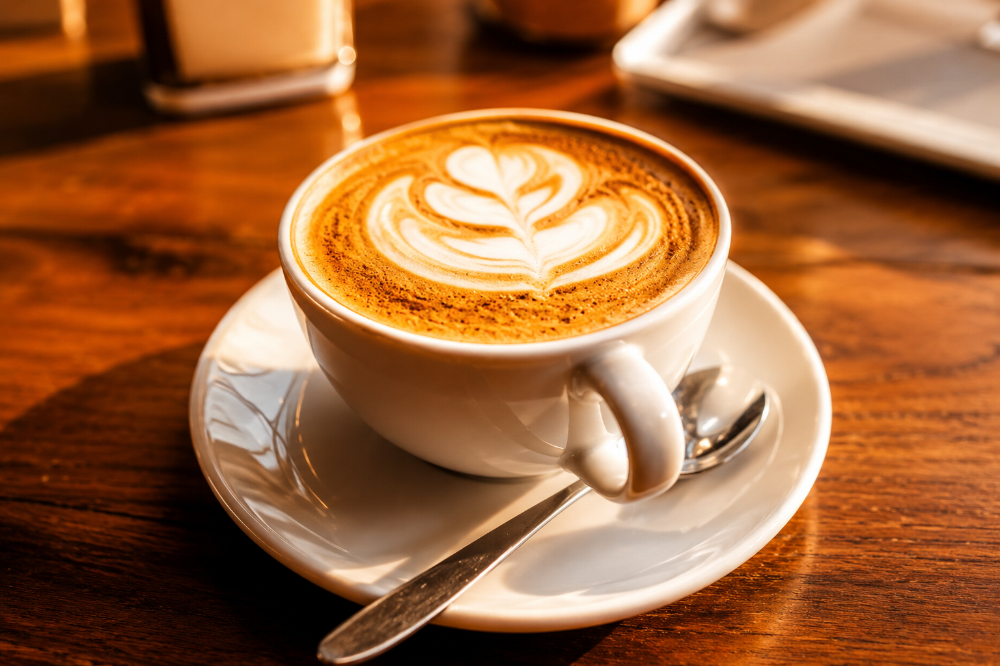
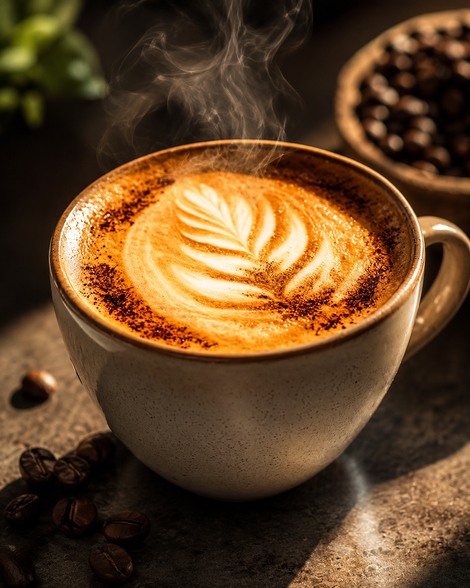
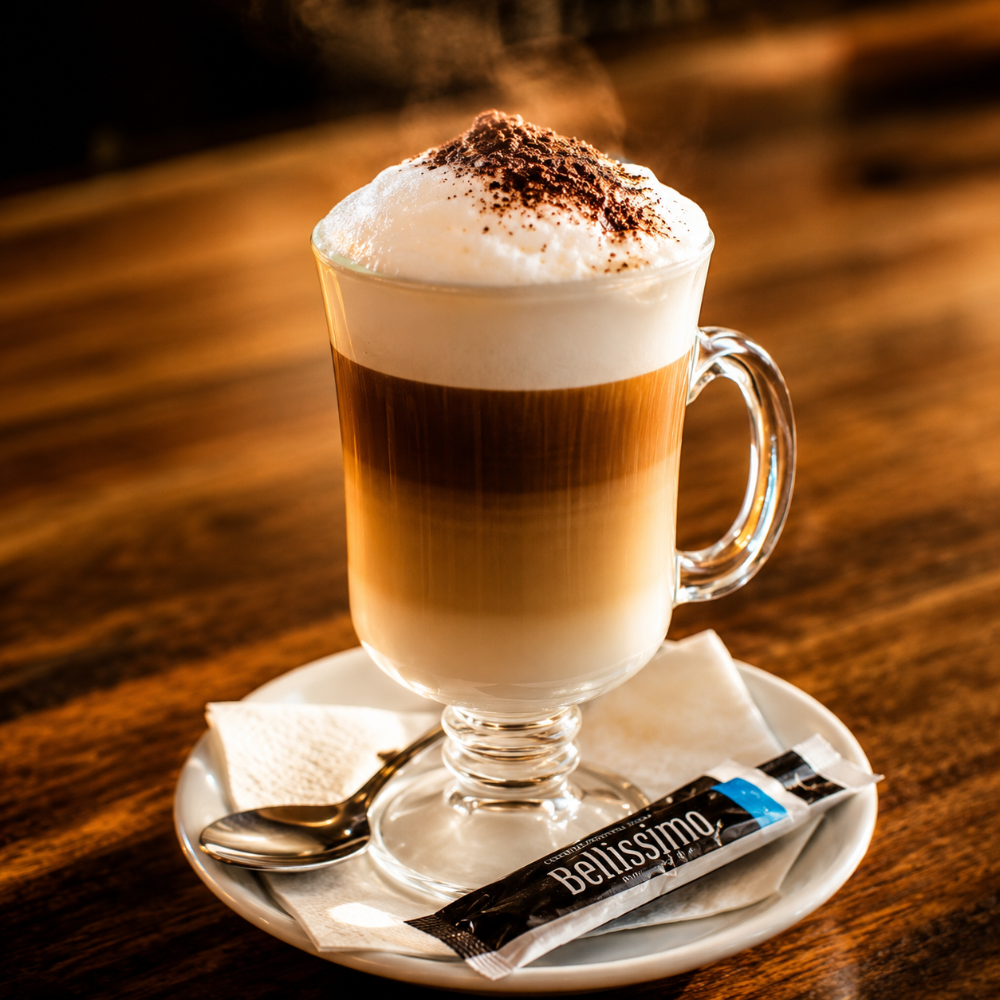
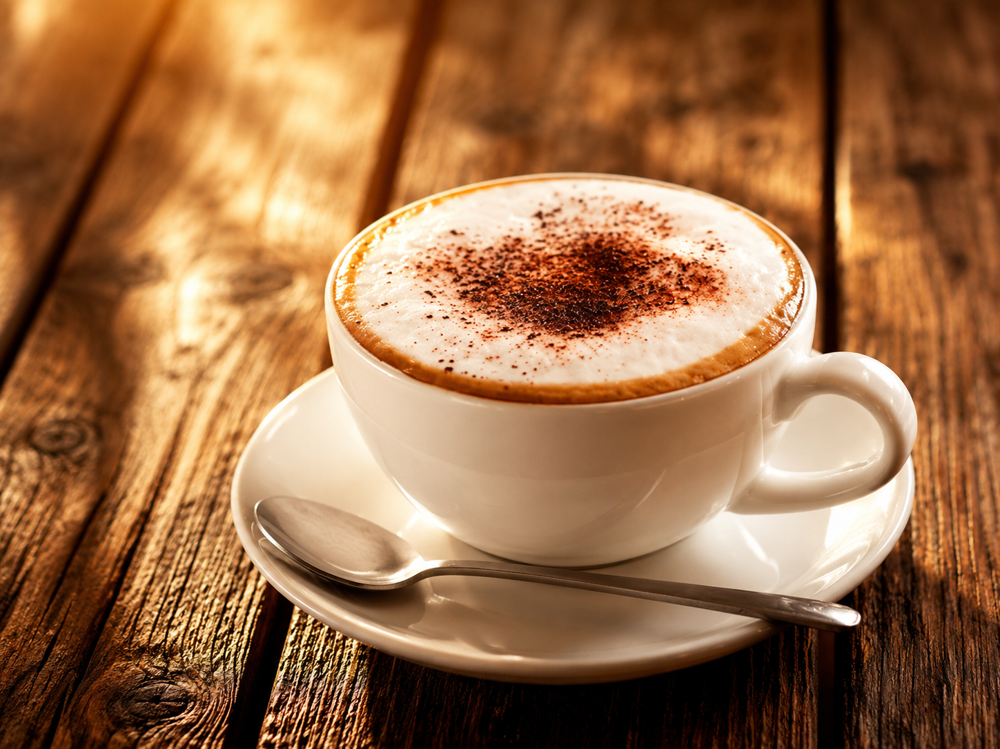

Cappuccino Clássico
Café espresso intenso, leite vaporizado cremoso, finalizado com um delicado toque de cacau. A combinação perfeita para qualquer momento.

Cappuccino Premium
Preparado com grãos selecionados, leite vaporizado e espuma aveludada, nosso cappuccino entrega um sabor intenso, aroma marcante e uma cremosidade irresistível em cada gole.

Latte Especial
Uma combinação harmoniosa de café espresso, leite cremoso e espuma aveludada, o equilíbrio ideal entre suavidade e intensidade em cada gole.

Cappuccino Italiano
Uma bebida suave e aromática, feita com espresso, leite vaporizado e espuma cremosa, com um toque de cacau para uma experiência única.
